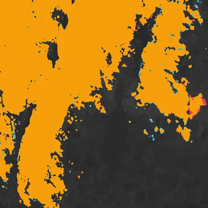
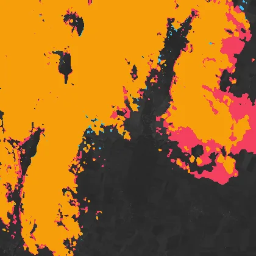
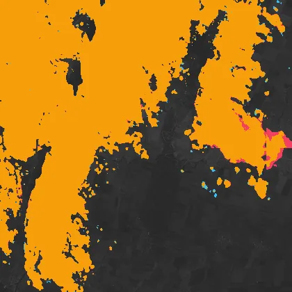
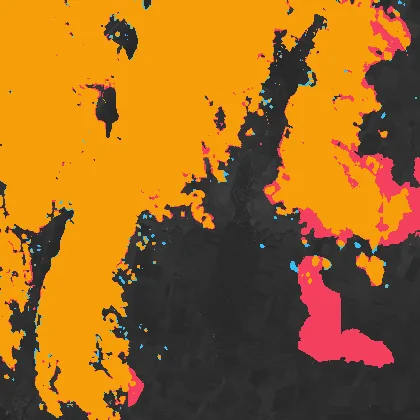
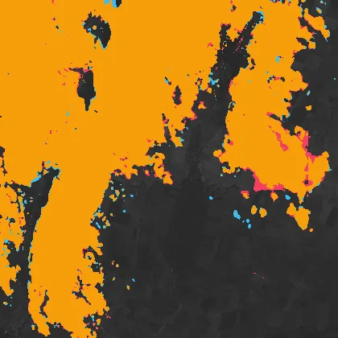
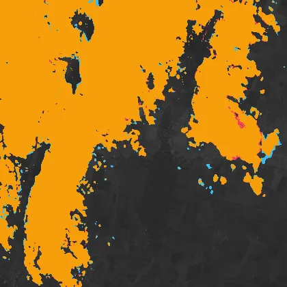
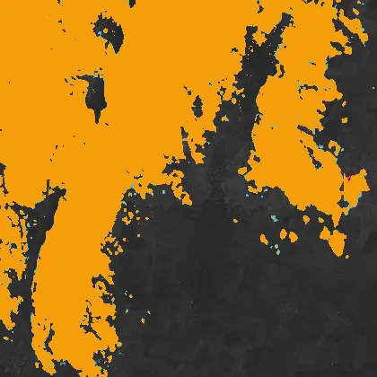

Benchmark / Use cases / Cloud mask / Results / T35TMK-20230306
T35TMK-20230306
Compression ratio and cloud mask
Each point is one level of a codec, named when you point at it, on this sample.
GeoZL PIVCOGeoZL PFORJPEG XLgeorvq
Change in cloud mask
The result from compressed data at each level.cloud on bothlostnew
GeoZL PIVCO
 quant-geozl-med-pivco-rms-tau5, RMSE 4.89
quant-geozl-med-pivco-rms-tau5, RMSE 4.89
4.5× · cloud_iou +0.998quant-geozl-med-pivco-rms-tau10, RMSE 9.51
5.9× · cloud_iou +0.995quant-geozl-med-pivco-rms-tau20, RMSE 19.9
8.4× · cloud_iou +0.991
quant-geozl-med-pivco-rms-tau40, RMSE 39.7
10.8× · cloud_iou +0.977
quant-geozl-med-pivco-rms-tau80, RMSE 79.5
12.7× · cloud_iou +0.857GeoZL PFOR
JPEG XL
jpegxl-distance-tau5, RMSE 4.9
4.7× · cloud_iou +0.999jpegxl-distance-tau10, RMSE 9.8
7.4× · cloud_iou +0.998jpegxl-distance-tau20, RMSE 19.9
13.8× · cloud_iou +0.995
jpegxl-distance-tau40, RMSE 39.5
34.0× · cloud_iou +0.978
jpegxl-distance-tau80, RMSE 79.5
110.4× · cloud_iou +0.876 georvq

georvq-s2-v1-rung8-0, RMSE 127
287.3× · cloud_iou +0.949
georvq-s2-v1-rung8-1, RMSE 81.7
132.9× · cloud_iou +0.971georvq-s2-v1-rung8-2, RMSE 63.2
86.5× · cloud_iou +0.978georvq-s2-v1-rung8-3, RMSE 54.5
64.1× · cloud_iou +0.983georvq-s2-v1-rung8-4, RMSE 49.1
50.9× · cloud_iou +0.984
georvq-s2-v1-rung8-5, RMSE 45.4
42.2× · cloud_iou +0.986georvq-s2-v1-rung8-6, RMSE 42.8
36.1× · cloud_iou +0.986georvq-s2-v1-rung8-7, RMSE 40.7
31.5× · cloud_iou +0.985georvq-s2-v1-rung8-8, RMSE 39.1
27.9× · cloud_iou +0.987